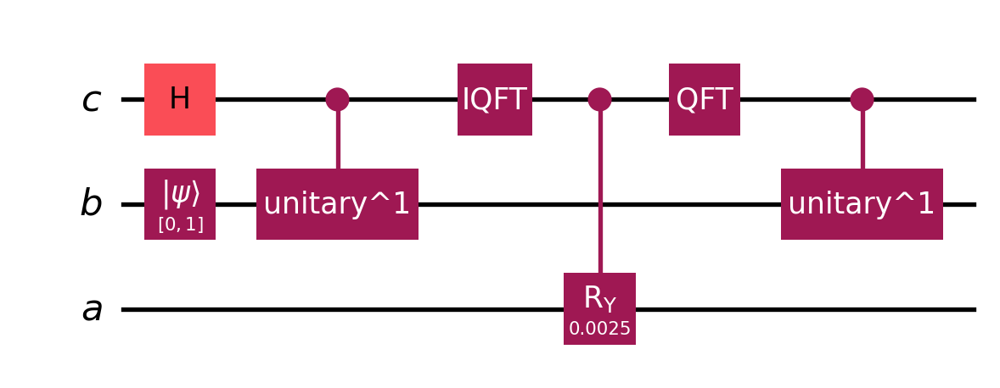

Code
N_b = 2 # number of variables (b.shape[0])
n_b = int(np.log2(N_b)) # number of qubits in b-register
# n_b = 1 # N_b = 2^(n_b), n_b = np.log2(N_b)
n_c = 1 # number of qubits in c-register
N_c = 2 # N_c = 2^(n_c)
t = np.pi/8
C = 0.01This document provides a step-by-step implementation of the HHL algorithm using Qiskit. The algorithm is broken into four key phases:
\(A=\begin{bmatrix}1 & -\frac{1}{3}\\-\frac{1}{3} & 1\end{bmatrix}\)
\(\vec{b}=\begin{bmatrix}0\\1\end{bmatrix}\)
\(n_b\): # of qubits in b-register
\(N_b=2^{n_b}\): # of unknows (length of \(\vec{b}\), \(len(\vec{b})=len(\vec{x})\))
\(n_c\): # of qubits in c-register
a larger \(n_c\) results in higher accuracy when the encoding is not exact
\(N=2^n\)
\(t=\frac{\pi}{8}\): time variable, should be multiple of \(2\pi\)
\(C=0.01\): a constant to pick, try to make \(C\) as large as possible while \(-1\leq\frac{C}{\tilde{\lambda_j}} \leq 1\)
N_b = 2 # number of variables (b.shape[0])
n_b = int(np.log2(N_b)) # number of qubits in b-register
# n_b = 1 # N_b = 2^(n_b), n_b = np.log2(N_b)
n_c = 1 # number of qubits in c-register
N_c = 2 # N_c = 2^(n_c)
t = np.pi/8
C = 0.01The goal for this phase is to remove unnecessary entanglements such that ensures correct final measurement. After uncomputing, the quantum state should ideally be close to \(|x\rangle\), where \(|x\rangle = A^{-1}|b\rangle\).
After Uncomputation, we will finally get \(\psi_{final}=|x\rangle\otimes|0\rangle_c\otimes|0\rangle_a\)
# prepare the previous steps
mat_A = np.array([[1, -1/3], [-1/3, 1]])
vec_b = np.array([0,1])
psi_1, qr_b, qr_c, qr_a = state_prep(mat_A, vec_b, n_c=1)
psi_4 = phase_estimation(psi_1, qr_b, qr_c, mat_A, t)
psi_6 = controlled_rotation(psi_4, qr_c, qr_a, C=C, t=t, n_c=n_c)
# psi_6.draw(output='mpl')c-registerApply QFT on c-register to move the phase-encoded eigenvalue information into a superposition of computational basis states.
Given \(|\psi_6\rangle=\frac{1}{\sqrt{\sum\limits^{2^{n_b}-1}_{j=0}|\frac{b_jC}{\tilde{\lambda_j}}|^2}}\sum\limits^{2^{n_b}-1}_{j=0}b_j|u_j\rangle|\tilde{\lambda_j}\rangle\frac{C}{\tilde{\lambda_j}}|1\rangle_a\) \[ \begin{align} |\psi_7\rangle &= \frac{1}{\sqrt{\sum\limits^{2^{n_b}-1}*{j=0}|\frac{b_jC}{\tilde{\lambda_j}}|^2}}\sum\limits^{2^{n_b}-1}_{j=0}\frac{b_jC}{\tilde{\lambda_j}}|u_j\rangle\text{QFT}|\tilde{\lambda_j}\rangle|1\rangle_a\\&=\frac{1}{\sqrt{\sum\limits^{2^{n_b}-1}*{j=0}|\frac{b_jC}{\tilde{\lambda_j}}|^2}}\sum\limits^{2^{n_b}-1}_{j=0}\frac{b_jC}{\tilde{\lambda_j}}|u_j\rangle~~~(\frac{1}{2^{\frac{2}{n}}}\sum\limits^{2^n-1}_{y=0}e^{2\pi i y\tilde{\lambda_j}/N}|y\rangle)~~~|1\rangle_a \end{align} \]
psi_7 = psi_6.copy()
psi_7.append(QFT(n_c, do_swaps=False), qr_c)
psi_7.draw(output='mpl')b-register.Then inverse controlled-rotations of the b-register by the clock qubits are applied with \(U^{−1} = e^{−iAt}\).
Similar to the forward process, when the controlling r-th clock qubit is \(|0\rangle\), \(|u_j\rangle\) will not be affected. If the r-th clock qubit is \(|1\rangle\), \((U^{−1})^{2r}\) will be applied to \(|u_j\rangle\). This is equivalent to multiplying \(e^{−i\lambda_jty}\) if the c-register is \(|y\rangle\) since \(2\pi i \phi=i\lambda_jt\)
\[ |\psi_8\rangle=\frac{1}{2^{\frac{n}{2}}\sqrt{\sum\limits^{2^{n_b}-1}_{j=0}|\frac{b_jC}{\tilde{\lambda_j}}|^2}}\sum\limits^{2^{n_b}-1}_{j=0}\frac{b_jC}{\tilde{\lambda_j}}|u_j\rangle~~~\left(\sum\limits^{2^n-1}_{y=0}e^{-i\lambda_jty}e^{2\pi i y\tilde{\lambda_j}/N}|y\rangle\right)~~~|1\rangle_a \]
Since we choose \(\tilde{\lambda_j}=\frac{N\lambda_jt}{2\pi}\), the two exponential terms cancel each other \[ \begin{align} |\psi_8\rangle &=\frac{1}{2^{\frac{n}{2}}\sqrt{\sum\limits^{2^{n_b}-1}_{j=0}|\frac{b_jC}{\tilde{\lambda_j}}|^2}}\sum\limits^{2^{n_b}-1}_{j=0}\frac{b_jC}{\tilde{\lambda_j}}|u_j\rangle~~~\sum\limits^{2^n-1}_{y=0}|y\rangle)~~~|1\rangle_a\\ &=\frac{C}{2^{\frac{n}{2}}\sqrt{\sum\limits^{2^{n_b}-1}_{j=0}|\frac{b_jC}{\tilde{\lambda_j}}|^2}}|x\rangle\sum\limits^{2^n-1}_{y=0}|y\rangle|1\rangle_a \end{align} \]
psi_8=psi_7.copy()
U_inv = expm(-1j * t * mat_A)
U_gate_inv = UnitaryGate(U_inv, label="e^{-iAt}") # Inverse U gate
# Apply inverse controlled-U operations in reverse order
for j in reversed(range(n_c)):
power = 2**j
controlled_U_pow_inv = U_gate_inv.power(power).control(1)
psi_8.append(controlled_U_pow_inv, [qr_c[j], *qr_b])
psi_8.draw(output='mpl')
The clock qubits and the b-register are now unentangled and the b-register stores \(|x\rangle\). Next, we can apply the Hadamard Gate on the clock qubits such that we get:
\[ \begin{align} |\psi_9\rangle &= \frac{1}{\sqrt{\sum\limits^{2^{n_b}-1}_{j=0}|\frac{b_jC}{\tilde{\lambda_j}}|^2}}|x\rangle\sum\limits^{2^{n_b}-1}_{j=0}\frac{b_jC}{\lambda_j}|u_j\rangle^{\otimes n}_c|1\rangle_a\\ &=|x\rangle_b|0\rangle_c^{\otimes n}|1\rangle_a \end{align} \]
psi_9 = psi_8.copy()
psi_9.h(qr_c)
psi_9.draw(output='mpl')
# Do the measurement
c_b = ClassicalRegister(len(qr_b), name='cb') # 存储 b-register 测量值
c_a = ClassicalRegister(1, name='ca') # 存储 a-register 测量值
psi_9.add_register(c_b, c_a) # 添加经典寄存器
psi_9.measure(qr_b, c_b) # 测量 b-register 并存入 cb
psi_9.measure(qr_a, c_a) # 测量 a-register 并存入 ca
psi_9.draw(output='mpl')
# 运行并查看结果
simulator = Aer.get_backend('statevector_simulator')
t_psi_9 = transpile(psi_9, simulator)
result = simulator.run(t_psi_9, shots=2 ** 10).result()
counts = result.get_counts(t_psi_9)
print(counts)
# 解析测量结果
measured_a1 = sum(counts[key] for key in counts if key[-1] == '1')
measured_a0 = sum(counts[key] for key in counts if key[-1] == '0')
# 计算归一化比值
if measured_a1 + measured_a0 > 0:
print("P(a=1) =", measured_a1 / (measured_a1 + measured_a0))
print("P(a=0) =", measured_a0 / (measured_a1 + measured_a0))
filtered_counts = {key[:-1]: count for key, count in counts.items() if key[-1] == '1'}
total = sum(filtered_counts.values())
if total > 0:
print("b-register state after post-select:")
for state, count in filtered_counts.items():
print(f"|{state}⟩: {count/total:.4f}"){'0 1': 1024}
P(a=1) = 1.0
P(a=0) = 0.0
b-register state after post-select:
|0 ⟩: 1.0000def uncomputation(qc, qr_b, qr_c, qr_a, mat_A, t, n_c):
"""
Complete uncomputation phase (Phase 4) of HHL algorithm
"""
# Step 1: Apply QFT on c-register
qc.append(QFT(n_c, do_swaps=False), qr_c)
# Step 2: Inverse controlled-U operations
U_inv = expm(-1j * t * mat_A)
U_gate_inv = UnitaryGate(U_inv, label="e^{-iAt}")
for j in reversed(range(n_c)):
power = 2**j
controlled_U_pow_inv = U_gate_inv.power(power).control(1)
qc.append(controlled_U_pow_inv, [qr_c[j], *qr_b])
# Step 3: Apply Hadamard on c-register
qc.h(qr_c)
return qc
# Test the uncomputation function
mat_A = np.array([[1, -1/3], [-1/3, 1]])
vec_b = np.array([0,1])
t = np.pi/8
C = 0.01
psi_1, qr_b, qr_c, qr_a = state_prep(mat_A, vec_b, n_c=1)
psi_4 = phase_estimation(psi_1, qr_b, qr_c, mat_A, t)
psi_6 = controlled_rotation(psi_4, qr_c, qr_a, C=C, t=t, n_c=n_c)
psi_9 = uncomputation(psi_6, qr_b, qr_c, qr_a, mat_A, t, n_c=1)
# Add measurement registers
c_b = ClassicalRegister(len(qr_b), name='cb')
c_a = ClassicalRegister(1, name='ca')
psi_9.add_register(c_b, c_a)
psi_9.measure(qr_b, c_b)
psi_9.measure(qr_a, c_a)
psi_9.draw(output='mpl')
prev Controlled Rotation
next is HHL Complete Version